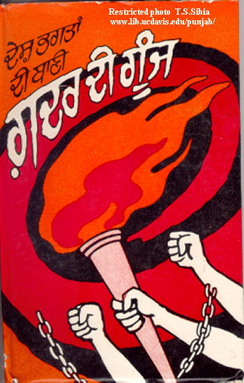

Gadar di Gunj
Pioneer Asian Indian
Immigration to the Pacific Coast

Return to:
Introduction - A note about Gadar di Gunj
The term "Gadar di Gunj" is given to the unique Complilation of the poetic Compositions which emerged at the initial stage of Ghadr movement and were published and distributed with terrific speed among the Punjabi immigrants in all corners of the world, covering various phases in the political situation in India from the time of battle Palassy. Its patriotic theme inspired in large number with a dream of future democratic Republic based on liberty, equality, and fraternity, free from corruption and without discrimination of any caste, creed, and religion. This poetry was an integral part of Ghadr literature. Its dominant theme was merciless exposure of piratical colonial exploitation of natural resources of subjugated countries in the economic field and oppression and suppression of the people with the force of gun, thus weaving a strong common political bond of struggle against the colonial regimes all over the world. This profoundly patriotic poetry became a matchless source of inspiration for sacrifices at the altar of liberation struggle at national and international level.
|
The first poem was written by Pandit Jagat Ram. It was recited by prisoners as a farewell poem for Sarabha. The second poem is also by Kartar Singh Sarabha and it became popular among the gadarites. These poems can be called the soul of the Gadar Movement, as they depict the depth of their conviction and dedication.
FAREWELL POEM FOR SARABHA (2) By: Pandit Jagat RamIndia is so proud of you, O Kartar,
WHO WE ARE (3) By: Kartar Singh Sarabha If anyone asks who we are Tell him our name is rebel Our duty is to end the tyranny Our profession is to launch revolution That is our namaz, this is our sandhya Our puja, our worship This is our religion Our work This is our only Khuda, our only Rama. |
 [Poetry of Ghadr Movement (In Present Context)] Editor: Gurbax Singh Bannuana. History Sub Committee Desh Bhagat Yadgar Committee Jalandhar. |